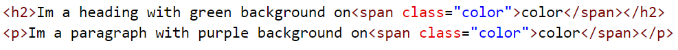

CSS Descendant Selectors
Supposed you have two tags span with same class name:
In this example we can use descendant selector. The first < span > class name is inside a < h2 > tag, while the second < span > is inside a < p > tag, based on that lets style both words color in white, but each with a different background color:
NEXT ➡️ PREV ⬅️